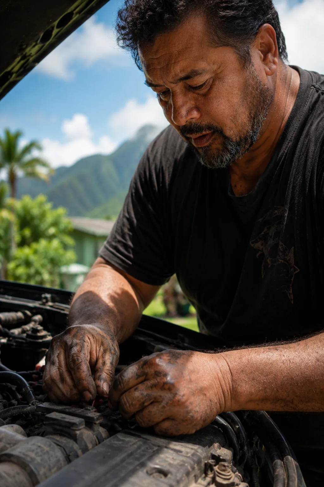

David Kahananui's story belongs in three rooms: a festival screen, a classroom, and the inbox of someone who can do something with it. This is how it gets there.
Hi Lisa,
His name is David Kahananui. He lives in Kaneohe, on the windward side of O'ahu. He researched the charter school, drove to the information night, filed the application, and followed up twice. What Archer got to be asked, David never was.
Archer graduated from the Hawaiian Academy of Arts and Science in 2023. He used Kindred's platform in class the year before and saw, for the first time, careers he had never encountered growing up. For David, the same discovery arrived thirty years too late.
We made a film about David. Twenty-two minutes. It is called AVAILABLE.
Watch AVAILABLEThere are a lot of Davids. People who did the responsible thing, built a life, and still never got asked what kind of life they wanted. Every student who uses Kindred is one fewer person left to find out thirty years late. Your gift last year kept that work running in classrooms where districts cannot cover the licence fee. Thank you for that.
A gift before 31 December keeps Kindred in twelve classrooms through May.
P.S. We start filming on the windward side of O'ahu in May. Donors who give before December get a letter when we get there.
David's name is the first thing they read. The ask is paragraph four. Short worked better here than long.
Hi Marcus,
One of your students graduated in 2023 from a charter school on O'ahu. Or one exactly like him did. His name is Archer. He used the platform in class and said it made careers feel real. Not career-fair real. Real like he could see lives that had never once been described to him before.
It's 22 minutes and it's called AVAILABLE. Show it in class if it fits. Forward it to one colleague if it doesn't. That's all it needs from you.
Watch AVAILABLENo pitch language. Their students are in the film. Two sentences says that, then asks one thing.
CTE directors do not need an introduction to the problem. They need a reason to take the meeting. AVAILABLE is that reason. The brief goes out within 24 hours of the call and it opens with David, not the platform.
The first call in Hawaii goes to Troy Sueoka. He is the State CTE Educational Specialist at the Hawaii DOE Office of Curriculum and Instructional Design. troy.sueoka@k12.hi.us, 808-305-9705. AVAILABLE was filmed in his catchment. That is the first sentence.
Chris does not pitch the film. He pitches what it uncovered, and every host gets a different version of it. A workforce researcher hears one thing. A CTE teacher hears another. A documentary programmer hears something else. The pitch changes. The film does not.
The show talks to Chris. The audience finds David.
Pitch formulaShort documentary at 22 minutes has a specific circuit. Tribeca and Full Frame are the credibility anchors in the US. Hot Docs brings the international conversation and a market. SXSW EDU is the room where the people who decide what goes into schools are physically present.
Don't burn the premiere online before the film has had a room. One festival, protect it. Educational distribution opens after that: Kanopy, Docuseek, the Video Project.
Kindred is a 501(c)(3). Sundance Documentary Fund (open call closes June 15, 2026), NEH Public Programs, and the Fledgling Fund all have eligibility criteria the organisation meets. The grant strategy starts during pre-production, not after the edit is finished.
22 minutes fits the short documentary programme at Tribeca, Hot Docs, and Full Frame. It plays in a school gymnasium. It embeds on a website. The festival run and the classroom life of this film are not in competition. They need each other.
What his face does in the seconds before he answers. Not the answer. That is the film.
The reel.
The post.
Fifteen seconds of real footage: David's hands, or his face in the moment before he answers. No graphics overlaid, no caption quoting the film back at itself. The LinkedIn post opens on a person, not a product.

Archer Kahananui graduated high school in 2023 knowing exactly what he wanted to do next.
His father David drove him to school every morning for twelve years. Nobody asked David the same question.
We went to film Archer's story. The better one was standing behind it.
22 minutes. It's called AVAILABLE.
If you work in schools or workforce development, it's worth 22 minutes.
If you know a David, send it to him.